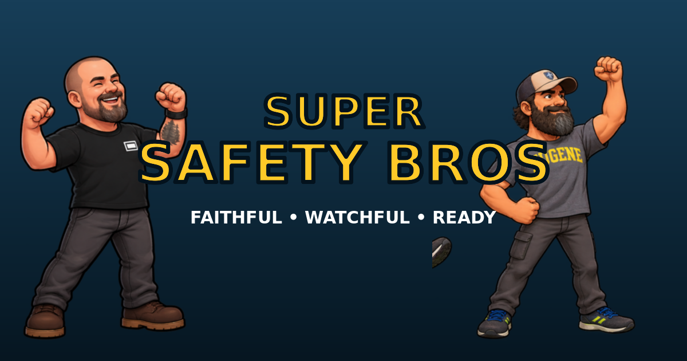

FEATURED ORIGINAL GAME
Super Safety Bros
A mobile-friendly church-safety platform adventure starring Nick and Travis, expanded to three worlds, ten stages, moving platforms, new enemies and hazards, lives, a Continue, and a final boss fight.
Play Super Safety Bros